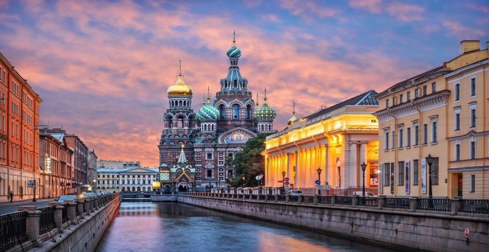
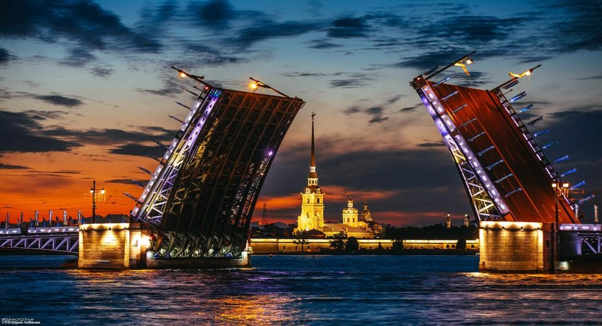
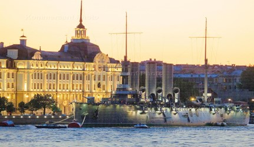
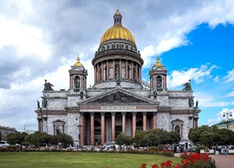
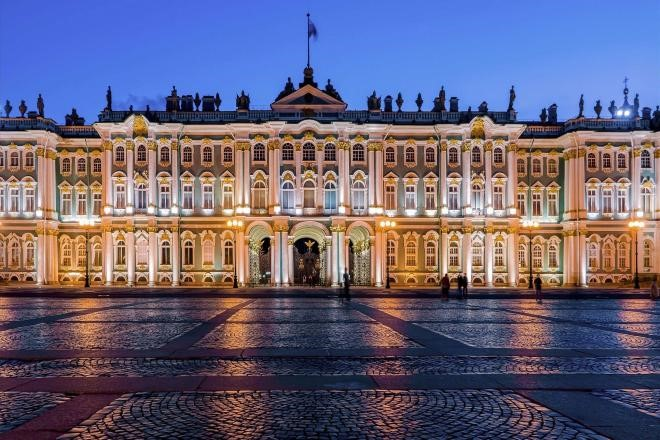

Санкт-Петербург — второй по величине город России, расположенный на северо-западе страны, в устье реки Невы на берегу Финского залива. Это один из самых молодых и в то же время самых величественных мегаполисов мира, основанный в 1703 году Петром I. Город является культурной столицей России, где среди строгих прямых проспектов, величественных набережных и уникальных архитектурных ансамблей скрыты шедевры мирового зодчества. Несмотря на то, что за свою историю город несколько раз менял название (Санкт-Петербург, Петроград, Ленинград) и пережил тяжелейшие испытания, его исторический центр сохранил свой неповторимый облик и включён в список Всемирного наследия ЮНЕСКО.
| Население | 5,6 млн человек |
| Площадь | 1439 км² |
| Язык | русский |
| Валюта | российский рубль |
| Время | UTC +3 (Московское время) |
| Виза | не нужна для граждан РФ и большинства стран СНГ |
Санкт-Петербург расположен в пределах Приневской низменности. Климат — умеренный, переходный от умеренно-континентального к умеренно-морскому. Благодаря близости к Балтийскому морю и влиянию Гольфстрима, климат здесь мягче, чем в других регионах на тех же широтах, но характеризуется частыми переменами погоды. Среднегодовая температура составляет около 5,8 °C. Самый холодный месяц — февраль со средней температурой около −6 °C. Средняя температура лета около 18 °C, но из-за высокой влажности может казаться прохладнее.
Лучшее время для посещения Санкт-Петербурга — период с мая по сентябрь. В июне и июле здесь можно застать знаменитое явление «белых ночей», когда солнце практически не заходит за горизонт. Чтобы насладиться городом без большого количества туристов, лучше приезжать поздней осенью или зимой, однако стоит быть готовым к короткому световому дню и частым дождям со снегом.
Официально историю Санкт-Петербурга принято отсчитывать с 1703 года. Город был заложен царём Петром I на отвоёванных у Швеции землях в устье Невы.
С 1712 по 1918 год Санкт-Петербург являлся столицей Российской империи. За этот период город обрёл статус главного политического, культурного и экономического центра государства, а также пережил разрушительное наводнение 1824 года.
В 1914 году город был переименован в Петроград, а после Октябрьской революции 1917 года столица была перенесена в Москву.
В 1924 году, после смерти Ленина, город получил название Ленинград. В годы Великой Отечественной войны он выдержал почти 900-дневную блокаду, став символом мужества и стойкости.
В 1991 году городу было возвращено его историческое название — Санкт-Петербург. Сегодня он вновь носит статус важнейшего культурного, научного и туристического центра России.
 |
 |
| Собор Спаса на Крови | Разводные мосты |
|
 Крейсер «Аврора» |
|
| Фотография | Описание |
|---|---|
|
 |
Исаакиевский собор — один из самых величественных архитектурных памятников Санкт-Петербурга и один из крупнейших соборов России. Расположен в центре города, на Исаакиевской площади. Строительство современного здания продолжалось около сорока лет и завершилось в 1858 году. Архитектор Огюст Монферран создал величественное сооружение в стиле позднего классицизма. Собор известен огромными колоннами, красивыми скульптурами и большим золотистым куполом. Внутри — мозаики, росписи, иконы. С колоннады открывается великолепный вид на исторический центр города. |
|
 |
Государственный Эрмитаж — один из крупнейших и самых известных художественных музеев мира, расположенный на Дворцовой площади. Главное здание — Зимний дворец, бывшая резиденция российских императоров. Музей основан в 1764 году Екатериной II. Сегодня в Эрмитаже хранятся картины знаменитых художников, скульптуры, археологические находки, драгоценности. Музей занимает несколько зданий, соединённых переходами. Эрмитаж считается одним из главных культурных символов Санкт-Петербурга. |
Державный град, возвышайся над Невою, Как дивный храм, ты сердцам открыт! Сияй в веках красотой живою, Дыханье твое Медный всадник хранит.
Несокрушим — ты смог в года лихие Преодолеть все бури и ветра! С морской душой, Бессмертен, как Россия, Плыви, фрегат, под парусом Петра!
Санкт-Петербург, оставайся вечно молод! Грядущий день озарен тобой. Так расцветай, наш прекрасный город! Высокая честь — жить единой судьбой!
Навигация по сайту:
Главная | Обзор ресурсов Интернет | Путеводитель по городу